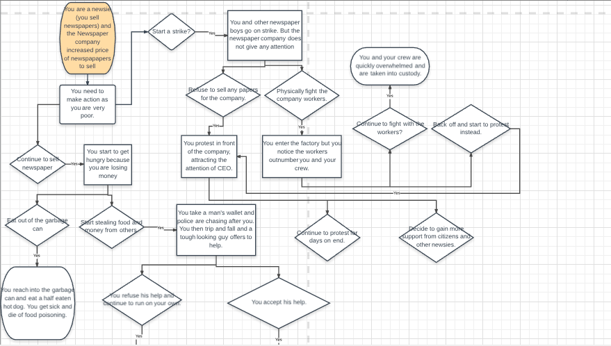
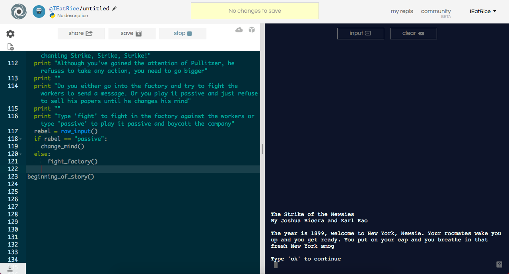

This list is of my projects I have completed in AP Computer Science Principles
This is my first scratch activity I have done. My partner Jefferson and I remixed a maze game by changing the layout of the game and the sprites. Instead of a ball moving to a goal, it was a kid trying to cross several streets to a building.
This scratch remix is a part of a project where my partner Jefferson and I modified a motion capture. The goal of the game is to "smack" away the monsters to save the princess and her friends. This game was made in scratch and utilizes an event handler that sense motion in the camera to call the next code.
This is an app that my partner Derek and I designed that helps high school students calculated GPA with weighted and unweighted classes. Featuring an amount of classes selector, listpicker for grade selected, and a weighted class option. The app was made in MIT App inventor and uses listpicker, buttons, and checkbox algorithms.
 
In our first trial of our use of Python was creating a decision game. My partner Karl and I created a game about the 19th century labor movement of newsies for fair wage. In this game you make different decisions in your pursuit of fair wage. Decisions will primarily be an active/aggressive or passive/calm approach to situations.
In this assignment, my partner Chris and I we given the task to give an image 8 changes using PIL and Pyplot that we have learned in 1.4. The eight changes my partner and I did were changing the colors of each teletubby, changing their T.Vs black, making the sky red, and on a separate subplot, we gave each teletubby a weird new face. The reason why we made the changes into 2 separate subplots instead of just one is because you can only paste images onto the subplot through PIL and change the colors through plt as PIL with the jpeg cannot utilize indexing which is needed for the color. The changes my partner and I made were that we first changed all the faces of each teletubbies to another round picture such as a beach ball or an emoji, the second change is on our third subplot which is where we changed various colors on the picture. We changed each teletubby to a new color, we changed the little TV on their stomach to black, and we changed the color of the sky to dark red.